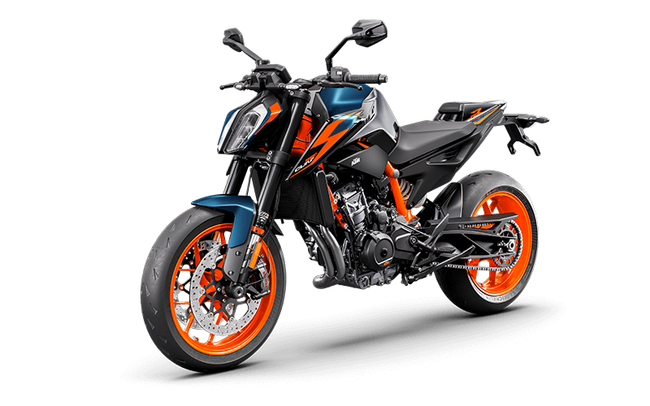

890 DUKE GP
La pasión por la velocidad y la aventura se une a la accesibilidad con nuestra selección de motos de alto cilindraje baratas. En Auteco, entendemos que cada motociclista busca una experiencia inigualable sin comprometer su presupuesto. Por eso, hemos reunido una variedad de opciones que combinan potencia, rendimiento y un precio atractivo, permitiendo que tanto los entusiastas como los nuevos pilotos puedan disfrutar del emocionante mundo del motociclismo. Ya sea que estés buscando conquistar la carretera o explorar nuevos caminos, nuestras motos de alto cilindraje están diseñadas para ofrecerte la libertad y la emoción que deseas. Atrévete a vivir la experiencia sobre dos ruedas y siente la adrenalina que solo una moto de alto cilindraje puede ofrecerte, sin que tu bolsillo sufra en el proceso.
Lamborghini
Lamborghini, fundada por Ferruccio Lamborghini en 1963, es una marca italiana de automóviles superdeportivos reconocida mundialmente por su diseño audaz, alto rendimiento y conexión con la tauromaquia. La empresa surgió de una rivalidad con Enzo Ferrari, cuando Ferruccio, un exitoso fabricante de tractores, decidió crear sus propios coches deportivos tras una disputa con Ferrari.

Lamborghini modernos
Lamborghini, fundada en 1963 por Ferruccio Lamborghini, es una marca italiana de automóviles superdeportivos de lujo. Su historia comienza con la insatisfacción de Ferruccio con los deportivos de Ferrari y su deseo de crear vehículos superiores. Inicialmente, Lamborghini se enfocó en tractores, pero la pasión por los autos lo llevó a fundar Automobili Lamborghini.

Lamborghin velocidad
El Lamborghini más rápido, en términos de velocidad máxima, es el Aventador LP 780-4 Ultimae, tanto en su versión coupé como roadster, alcanzando los 355 km/h. Modelos como el Veneno y el Aventador SVJ también figuran entre los más rápidos de la marca, con velocidades máximas de 355 km/h y 351 km/h respectivamente. El Miura, lanzado en 1966, es considerado un hito, marcando el inicio de la era de los superdeportivos con una velocidad de 280 km/h.